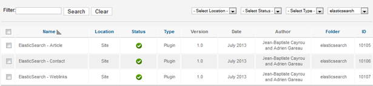
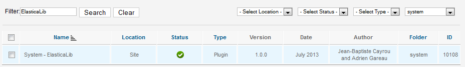
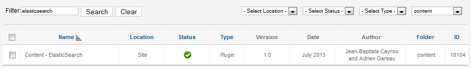
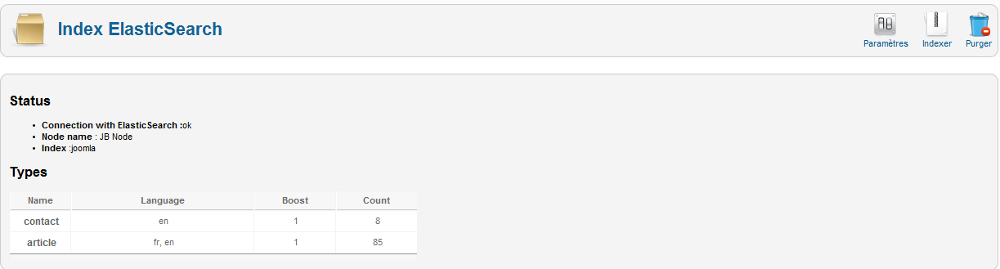
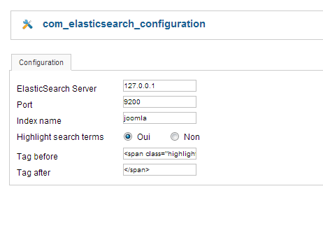
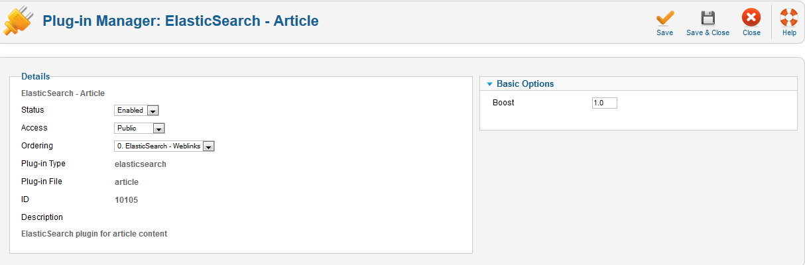
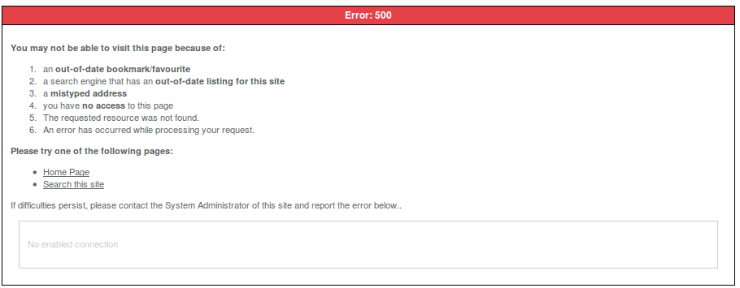

JES - Extension ElasticSearch for Joomla!
<?php
echo $test;
?>
Administrator Guide
Introduction
You absolutely need to have an ElasticSearch server if you want to use this extension. If you need further information about ElasticSearch you can go on their website:
http://www.elasticsearch.org/This extension for Joomla! is a powerful search engine which uses ElasticSearch as indexer.
Here some features it provides:
- Results are ordering by pertinence.
- Boost on some fields. If a search word is in title it is more pertinent than if it is just in the content.
- Smart search. Our engine does not search the exact words which have been typed. The search is made by prefix so if you write part of a word it could return the whole word.
- Internationalization. Search results are in the same langue that current user.
- Stopword. Common words (the, it, is etc.) are eliminated from the search query.
- Search words are highlighted in the results. The way highlighting is made can be modified. Indeed you can choose to bold results are use a special html tags.
- Each type of content has its own display. Different elements can be display depends on type of the result.
- PDF file can be easily index. You can attach a file to content and make search in that content.
Installation
Enable extensions
Our engine is made of one component and one plugin for each type of content (article, contact). It also has a plugin to communicate with Joomla! events and one library to use some special methods. A package has been created so you just have to install the .zip package and it will install component and plugins. But unfortunately some plugins are disabled by default. You will have to enable them. Here is a list of those plugins:
- Each plugins which deal with content ( you can sort them by folder and choose elasticsearch)
- Plugin which communicates with Joomla! (it is in the content folder)
- The system plugin ElasticaLib (in system folder)
You should also check that the component is correctly enabled.
  Search bar
A new module has been created to use our component. It is installed at the same time of others plugins. You just have to enable it and disable previous search module. If you have defined your own template you will have to create your file for the module.
Administrator panel
One you have installed and configured all plugins and component you should see ElasticSearch in your components list. If you go to the administration page you should see that:
That page is helpful to know if you have a correct connection with ElasticSearch, the name of your node and your index. It also shows which type of content you have indexed and how many documents you have for each and the language.
There are also three buttons which are really useful:
- Options:
ElasticSearch server address, the port and the name of your index. Highlighting could be enabled here and you can specify a particular html tags here.
- Index:
It is really helpful if you already have documents when you have installed our extension. When clicking on that button it will index all documents for each plugins.
- Purge:
Clicking on that button will flush you index. It is necessary if you make some modification on the code. You will need to index all your contents again.
Plugin Administration
There is also an administration panel for plugins. There is one panel for each plugin (Available at the Plugin Manager page). For each plugin boosting can be changed. The boost is really useful to put forward particular contents. For example boosting a particular content helps to put them into top of results’ list. But the number you enter is an exponent so it must not be higher than 5 (higher would cause some issues with other contents on result list). When you chance boost value you need to re-index your site (Purge and Index in elasticsearch admin component).
Search Terms Analysis
There is an analyzer that stores every search words which are typed. It shows how many times a word or sentence has been written and how many results were returned. It can be enable at the search page administration component (administrator/index.php?option=com_search) in settings. But the column result is useless because it uses the default search engine and not the custom one with ElasticSearch.
Template Overriding
For each plugins which deal with contents you can override the way results are displayed. If you already have your own template you have to create a folder for each of your plugin (in html folder). If you kept the basic template you just have to create folder in /templates/atomic/html. There will be one folder for each plugin and you have to keep the same name as the one in your plugin folder: plg_[nameofyourcontent].
Limits
There are some limits due do ElasticSearch. For example if a user makes a blank search boosting will not be taken into account. It is a known bug in ElasticSearch and the community is trying to find a solution. Besides, words which are highlighted are the first to appear. In fact, there is no way to get scoring for words which are highlighted so it is the first occurrence of the word that will be highlighted. One of the problems is when users make an exact search using stop words in it. The request will return none results due to ElasticSearch analyzer.
Problems and Resolves
There are some problems you may have to deal with. For example when you make a search and you have that error:
Or if you have that error in your administration panel:
You should check your connection with ElasticSearch. It means that it cannot connect to ElasticSearch server. Another thing is if you change language of multiple articles in a row. You will have to purge and index before making a new search. Indeed there is no events which are fired when language is change for multiple articles. If there is an article which doesn’t appear in search result you should check that it is published. Indeed articles are indexed only if they have status published.